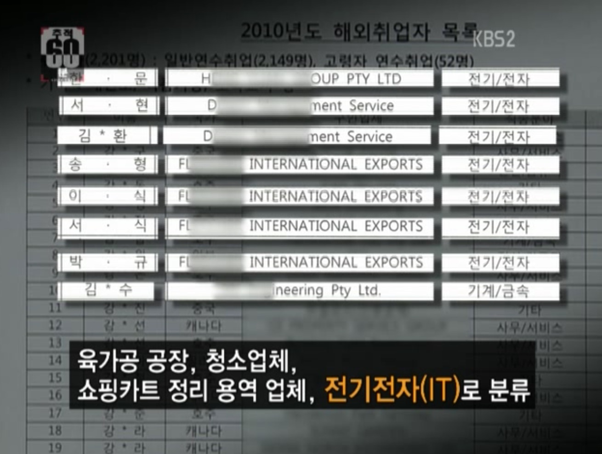
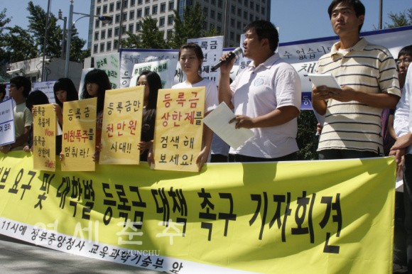

These field notes gather a few earlier moments that shaped my questions about labor, inequality, institutions, and collective life. They are not meant as a complete archive, but as fragments of experience that later found their way into my research and teaching.
Over time, many of these earlier experiences gradually evolved into research questions, classroom discussions, and empirical projects.
Today, my work focuses on labor markets, institutions, inequality, technology, migration, and platform labor. In my teaching, I try to connect quantitative reasoning to human experience and public life.
Experiences across different institutional and social settings — in Korea, Singapore, and the United States — continue to shape the comparative perspective through which I approach labor, inequality, and social change.


If I had to summarize my five days in Paris—apart from the conference itself—in a single word, it would be flâneur. Not quite the flâneur of modern complexity that Walter Benjamin wrote about, but something closer to Baudelaire's original figure: a quiet observer wandering through the city, attentive to people, places, and the rhythms of everyday life.
The place I will remember most from this trip was a small path tucked between the international houses of the Cité Internationale Universitaire de Paris. It was a short tree-lined path, perhaps no more than a hundred meters long. I appreciated Paris's efficient public transportation and its low-rise skyline, but the space I came to love most was this modest stretch of trees that I walked through each day on my way from the residence halls to the Paris School of Economics.
The path was always filled with small scenes of life: elderly people sitting on benches in the afternoon sun, children running across the grass, students exercising together, and young people from different countries speaking in different languages. After years of living abroad, I have gradually come to prefer nature over cities. Perhaps that is why I felt strangely at ease there. For a brief moment, I, a foreigner, did not feel like a foreigner there. I could walk at my own pace, watch people pass by, and allow my thoughts to wander wherever they wished.
Like the university city itself—founded in the 1920s under ideals of international exchange and peace—the path seemed to carry traces of countless students who had walked it before. I imagine many of them thinking about their families, worrying about events back home, or wondering what their futures might hold. In that quiet sense of stability, removed for a moment from the usual complexity of life, I found myself thinking often about my family. Inevitably, I found myself thinking about my dissertation as well.
Previous visits to Paris never gave me much reason to explore the southern part of the city. This time, however, the conference gave me an unexpected gift: a place I suspect I will remember for a very long time. The ability to walk slowly through a city, to observe people and landscapes, and to pause long enough to reflect on life—perhaps the sensibility Baudelaire cherished still lingers somewhere along that small path.
This photograph was taken during a visit to Korea while I was in my doctoral program. The area around the National Assembly is often filled with labor petitions, public demonstrations, and collective demands.
Many of my closest friends work as labor policy staffers, labor journalists, or union organizers. In a sense, we often end up meeting in the streets — not because we planned it that way, but because the field itself keeps bringing us back together.
It was also a friend’s birthday. On that day, the easiest place for all of us to gather happened to be a large public demonstration in front of the National Assembly.

During graduate school, I served as one of the representatives for the graduate student union at The New School. Around the same period, I also participated in solidarity actions supporting Columbia student workers during their contract strike.
What stayed with me most was not only the strike itself, but the emotional and institutional complexity of academic labor. On this day, my close friend Akhil delivered a solidarity speech that I still remember vividly.


In the fall of 2021, I spent time observing the hunger strike organized by the New York Taxi Workers Alliance around medallion debt and platform restructuring.
I approached the space less as an organizer and more as a careful observer. I became interested in how collective action emerges in one of the world’s busiest cities, how solidarity is sustained over time, and how workers narrate injustice in one of the most unequal urban environments in the world.


After completing my military service, I decided not to return to parliamentary politics and instead chose to pursue research and graduate study.
In 2017, during my master’s studies at Yonsei University and before beginning my doctoral studies in New York, I spent several months in Singapore as an exchange student and research fellow affiliated with the Lee Kuan Yew School of Public Policy at the National University of Singapore.
Living between Korea, Singapore, and later the United States deepened my interest in how different institutional systems organize labor, inequality, migration, and economic development in distinct ways.
What stayed with me most was not only the policy discussions themselves, but the contrast in everyday social organization, governance, and public life across different societies. Those experiences gradually strengthened my comparative perspective on labor markets and institutions.

From 2010 to 2012, during a politically turbulent period under the Lee Myung-bak administration, I worked inside the National Assembly as a labor policy advisor.
Together with the Assembly member I supported, I traveled across Korea visiting disputed workplaces, meeting workers and union representatives, preparing policy materials, and participating in legislative discussions related to labor rights, workplace safety, and precarious employment.
Much of this work took place away from cameras — in policy meetings, legislative offices, temporary union spaces, and conversations with workers confronting institutional and economic insecurity.


Subcontracting, Responsibility, and the Hidden Architecture of Work
One issue appeared repeatedly during my years in the National Assembly: workers performing the same tasks under fundamentally different employment relationships.
In automobile factories, shipyards, steel mills, and electronics plants, regular employees and subcontracted workers often stood side by side on the same production line. At Hyundai Motor, a regular employee might install the left wheel while an in-house subcontracted worker installed the right. Their work was nearly identical, yet their wages, job security, legal protections, and bargaining power were dramatically different.
During this period, in-house subcontracting became one of the most contentious labor issues in Korea. Through workplace visits, policy discussions, and legislative work, I observed how responsibility became increasingly fragmented across multilayered production networks. As production moved through layers of contractors and suppliers, accountability became more difficult to locate, while protections became increasingly uneven.
Years of pressure from labor unions, opposition parties, legal scholars, and civil society organizations eventually led the Ministry of Labor to conduct a nationwide investigation into subcontracting practices across major manufacturing workplaces. The findings intensified public debate and were subsequently discussed at a joint forum organized by five opposition parties and the Korean Confederation of Trade Unions, bringing together labor leaders, policymakers, and scholars, including Kim Young-hoon, then President of the Korean Confederation of Trade Unions and currently Minister of Employment and Labor, labor law scholar Park Soo-keun, and labor economist Lee Sang-ho.
What struck me most was not subcontracting itself, but the fragmentation of responsibility. As production was divided across layers of contractors and suppliers, accountability became increasingly difficult to locate. The further one moved down the supply chain, the weaker protections became and the greater the pressure to reduce labor costs.
The experience left me with a question that continues to shape my work today: how can workers performing nearly identical tasks come to occupy such different positions in the distribution of risk, protection, and opportunity?
| Workplace | Regular Workers | Subcontracted Workers | Ratio |
|---|---|---|---|
| Total (25 worksites) | 197,969 | 79,298 | 40.1% |
| Daewoo Shipbuilding | 12,600 | 14,812 | 117.6% |
| Samsung Heavy Industries | 11,332 | 15,209 | 134.2% |
| STX Shipbuilding | 2,986 | 4,213 | 141.1% |
| Nokia TMC | 613 | 1,744 | 284.5% |
| Samsung SDS | 10,023 | 4,762 | 47.5% |
Overseas Youth Employment and Policy Implementation
One project that remains particularly memorable involved government-supported overseas youth employment programs. Concerned by the lack of information about participants’ actual experiences, I organized an independent investigation through a National Assembly office. Drawing on administrative records covering roughly 1,900 overseas employment participants over a five-year period, I conducted surveys and interviews with approximately 100 former participants.
What emerged often differed sharply from official policy narratives. Some young people who had been promised professional opportunities abroad found themselves working in strawberry farms, poultry-processing facilities, cleaning contractors, or other jobs far removed from what had been advertised. Others reported weak oversight, inadequate support, and exploitative working conditions.
The findings were presented during a National Assembly audit and later attracted broader media attention. Survey results, participant interviews, and supporting documentation from the investigation were subsequently used in national television reporting on overseas employment programs. The Ministry of Employment and Labor later reviewed monitoring and follow-up procedures for the programs, although many of the underlying challenges remained unresolved.
The experience taught me how easily vulnerability can be obscured when mobility is framed primarily as opportunity. Questions about mobility, institutional protection, and the distribution of risk continue to shape my research on migrant workers and labor market inequality.

From 2010 to 2012, during a politically turbulent period under the Lee Myung-bak administration, I worked inside the National Assembly as a labor policy advisor.
Together with the Assembly member I supported, I traveled across Korea visiting disputed workplaces, meeting workers and union representatives, preparing policy materials, and participating in legislative discussions related to labor rights, workplace safety, and precarious employment.
Much of this work took place away from cameras — in policy meetings, legislative offices, temporary union spaces, and conversations with workers confronting institutional and economic insecurity.
When I entered Yonsei University, the institution was undergoing a significant structural transition. The traditional department-based system was being reorganized into a broader undergraduate college system, reshaping student organizations, representative structures, and many of the informal institutions that had long sustained campus life.
What appeared to be an administrative reform was, in practice, a redistribution of resources, authority, and representation. Formal institutional change altered not only organizational charts, but also everyday relationships, student communities, and access to space and opportunity. Over the following years, I encountered these changes from different positions—as a student representative, organizer, participant in university governance debates, and eventually as someone trying to understand these developments through the language of policy and institutions.
Institutions Are Designed—and Negotiated
One of my earliest lessons came through questions that seemed deceptively simple. Who should have access to limited space? Who should be represented in university governance? Who gets to participate in decisions that affect a community?
As President of the College of Social Sciences Student Council, I led the effort to establish a student-run study room for social science students. The project required negotiating among departments, research institutes, faculty members, student organizations, and other groups competing for the same space. Around the same period, debates over the composition of the University Council raised broader questions about representation, legitimacy, and participation in institutional decision-making.
These experiences taught me that institutions are not simply rules written on paper. They are negotiated arrangements that emerge through conflict, coalition-building, compromise, and ongoing efforts to maintain legitimacy.
Policy Requires More Than Good Intentions
Over time, my attention increasingly shifted toward questions of educational access and student finance. Tuition affordability was among the most contentious issues facing Korean universities at the time.
Within Yonsei University, we developed proposals concerning tuition installment plans, financing costs, student financial support, and broader questions of educational opportunity. Beyond campus, I helped build networks with student representatives from Seoul National University, Korea University, Hanyang University, and other institutions. What began as a university-specific issue gradually expanded into broader discussions involving journalists, civil society organizations, financial institutions, and policymakers.
We collected nearly 8,000 student signatures, organized press conferences, and engaged in sustained discussions with university administrators, banks, legislators, and advocacy organizations. These efforts contributed to reforms including expanded tuition installment plans, reduced financing costs, and interest-support programs for students entering mandatory military service.
The most important lesson was not the policy outcomes themselves. It was learning that good ideas rarely change institutions on their own. Reform requires organization, coalitions, bargaining power, feasible alternatives, and a strategy for translating demands into implementable policy.
Information as a Source of Power
The tuition debate eventually led to broader questions about university finances. At the time, universities managed substantial reserve and investment funds, yet students had limited access to information about how those resources were being used.
I became involved in efforts demanding greater transparency in university financial management. Working alongside students, journalists, and civil society organizations, we argued that accountability required meaningful access to information. Years later, these efforts culminated in a Supreme Court decision requiring disclosure of key university financial information.
The experience taught me that information is not merely data. It is a resource that structures power relationships. Who possesses information, who can interpret it, and who can demand access to it often shapes who has influence within an institution.

When Theory Met Reality
At the same time, I was taking courses in public policy, policy evaluation, and institutional analysis. I remember reading Evert Vedung’s work on policy evaluation and Hayoun Seop’s Institutional Analysis: Theories and Debates repeatedly until the books were worn from use.
One day, a professor asked me to explain the ongoing tuition and university governance debates to fellow students in a policy evaluation course. Standing in front of the classroom, mapping stakeholders, identifying asymmetries of resources and influence, and comparing policy alternatives, I experienced something I had never felt before.
The texts I was reading helped me understand reality, while reality gave new meaning to the texts. For the first time, I realized that scholarship was not separate from the world. Theory was not merely a set of concepts to memorize; it was a language for understanding how organizations function, why people cooperate or conflict, and how institutions change.
Questions That Remain
Looking back, I now see these experiences not as separate activities but as different encounters with the same set of questions. Why do some reforms succeed while others fail? What gives actors bargaining power? Why do some ideas become institutions while others disappear? Who benefits from existing arrangements, and who bears their costs?
More importantly, I became interested not only in identifying problems but in understanding the institutional structures that produce them—and the possibilities for changing those structures.
My undergraduate years taught me two lessons that continue to guide my work today. Good intentions alone rarely change institutions. At the same time, pragmatic compromise without a larger vision rarely produces lasting change.
Policies without vision lose direction. Visions without practical pathways rarely transform reality.
Looking back, I suspect that my current research on labor market institutions, technological change, and inequality began with these questions long before I entered graduate school.
One of my earliest international experiences came through participation in protests surrounding the World Trade Organization meetings in Geneva. I joined as a university student, helping with interpretation work alongside Korean farmer organizations and international civil society groups.
It was my first time leaving Korea. What I remember most was not confrontation itself, but the contrast between the calmness of Switzerland and the intensity of nightly discussions taking place inside underground meeting spaces and temporary organizing rooms.
People from different countries, movements, and political traditions gathered together — often disagreeing strongly, yet still attempting to build common language and shared demands. That experience taught me that solidarity is often imperfect, negotiated, and still deeply meaningful.


Ongoing Questions
They are simply fragments of observation, participation, and memory that gradually shaped the kinds of questions I continue to ask today — about labor, institutions, inequality, collective action, and human dignity.